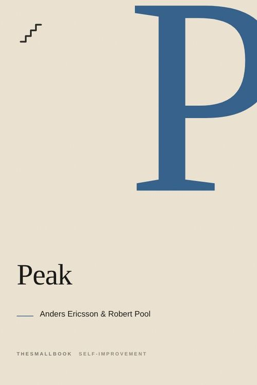
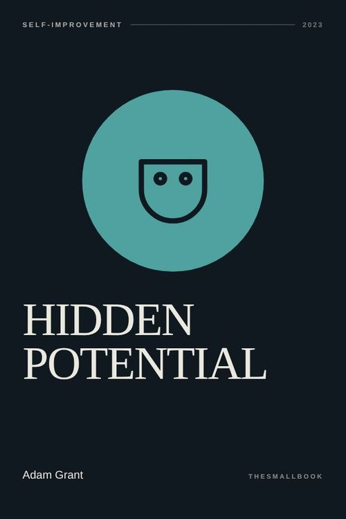
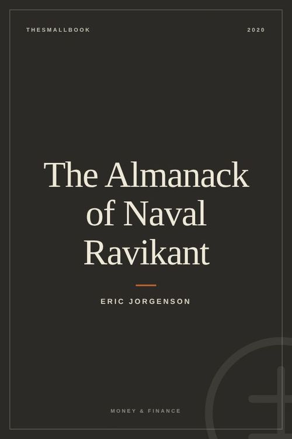
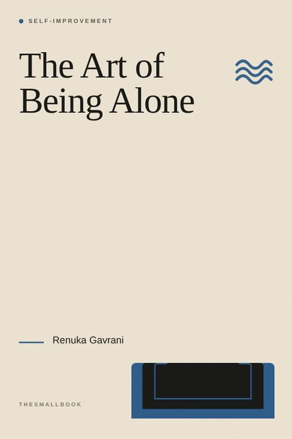
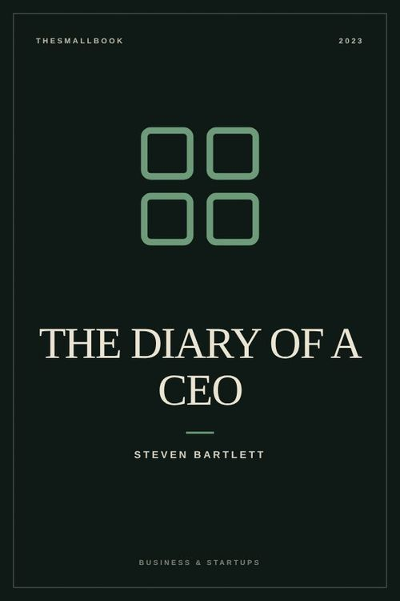

Library › Topics › Learning
Everything on learning faster
Learning is not collecting highlights. This shelf gathers the books that treat it as a trainable skill: attention, practice, memory, feedback and range. Each summary keeps the method and the first action, so a reading session can become a practice session today.
15 BOOKS · ALL FREE · AUDIO IN 26 LANGUAGES UltralearningScott H. Young · 2019Aggressive, self-directed learning - metalearning, deep practice, and direct application - can outpace formal education.11 min · 8 lessons · small read
UltralearningScott H. Young · 2019Aggressive, self-directed learning - metalearning, deep practice, and direct application - can outpace formal education.11 min · 8 lessons · small read The Art of LearningJosh Waitzkin · 2007The subject of Searching for Bobby Fischer mastered two unrelated arts with one method: incremental growth, smaller circles, and turning every...8 min · 6 lessons · small read
The Art of LearningJosh Waitzkin · 2007The subject of Searching for Bobby Fischer mastered two unrelated arts with one method: incremental growth, smaller circles, and turning every...8 min · 6 lessons · small read MasteryRobert Greene · 2012Mastery isn't genetics - it's a repeatable path: find your life's task, serve the apprenticeship, absorb mentors, master people, and fuse it all into...8 min · 6 lessons · small read
MasteryRobert Greene · 2012Mastery isn't genetics - it's a repeatable path: find your life's task, serve the apprenticeship, absorb mentors, master people, and fuse it all into...8 min · 6 lessons · small read LimitlessJim Kwik · 2020There's no such thing as a good or bad memory - only trained and untrained. Unlimit your mindset, motivation, and methods.8 min · 6 lessons · small read
LimitlessJim Kwik · 2020There's no such thing as a good or bad memory - only trained and untrained. Unlimit your mindset, motivation, and methods.8 min · 6 lessons · small read RangeDavid Epstein · 2019The Tiger Woods path (specialize at 2) wins in golf. Almost everywhere else, the Roger Federer path (sample, quit, switch, integrate) wins - because...8 min · 6 lessons · small read
RangeDavid Epstein · 2019The Tiger Woods path (specialize at 2) wins in golf. Almost everywhere else, the Roger Federer path (sample, quit, switch, integrate) wins - because...8 min · 6 lessons · small read Make It StickPeter C. Brown, Henry L. Roediger III, Mark A. McDaniel · 2014Learning sticks when it feels hard: retrieval, spacing and interleaving beat re-reading, cramming and highlighting every time.8 min · 6 lessons · small read
Make It StickPeter C. Brown, Henry L. Roediger III, Mark A. McDaniel · 2014Learning sticks when it feels hard: retrieval, spacing and interleaving beat re-reading, cramming and highlighting every time.8 min · 6 lessons · small read
PeakAnders Ericsson & Robert Pool · 2016Anders Ericsson, the researcher behind the 10,000-hour rule, explains what actually creates expertise: deliberate practice, mental representations...9 min · 7 lessons · small read The First 20 HoursJosh Kaufman · 2013The 10,000-hour rule is about mastery. For useful skill, 45 minutes a day for a month of smart, barrier-free, feedback-rich practice gets you...8 min · 10 lessons · small read
The First 20 HoursJosh Kaufman · 2013The 10,000-hour rule is about mastery. For useful skill, 45 minutes a day for a month of smart, barrier-free, feedback-rich practice gets you...8 min · 10 lessons · small read A Mind for NumbersBarbara Oakley · 2014Math and science aren't about talent - they're about two modes of thinking, chunks, and the courage to be a beginner.8 min · 6 lessons · small read
A Mind for NumbersBarbara Oakley · 2014Math and science aren't about talent - they're about two modes of thinking, chunks, and the courage to be a beginner.8 min · 6 lessons · small read The Long Game ClassroomUnknown · 2026A TheSmallBook Original about the study practices that actually produce durable learning.11 min · 8 lessons · small read
The Long Game ClassroomUnknown · 2026A TheSmallBook Original about the study practices that actually produce durable learning.11 min · 8 lessons · small read
Hidden PotentialAdam Grant · 2023Potential is not a fixed gift you either have or lack. It is built through character skills, smart practice and systems that open doors for people...11 min · 10 lessons · small read
The Almanack of Naval RavikantEric Jorgenson · 2020Seek wealth, not money: assets that earn while you sleep. And happiness is a skill you can learn, like coding.8 min · 6 lessons · small read The AnalectsConfucius · -400Confucius' programme: the superior person cultivates himself daily - first study, then practice, then character.7 min · 9 lessons · small read
The AnalectsConfucius · -400Confucius' programme: the superior person cultivates himself daily - first study, then practice, then character.7 min · 9 lessons · small read
The Art of Being AloneRenuka Gavrani · 2021Renuka Gavrani's warm, practical guide to solitude: how being alone with yourself can become your greatest relationship instead of your biggest fear.8 min · 6 lessons · small read
The Diary of a CEOSteven Bartlett · 2023Master the four pillars - self, story, philosophy, team - because the laws of great companies are the laws of great lives, tested at scale.8 min · 6 lessons · small readStart here
For a direct method, open How do I learn anything faster? For a ranked shelf, see the best books on learning fast. Then pick one book and use its first lesson before you buy another course.
BROWSE ALL 600 BOOK SUMMARIES
Every summary free, with lessons and action steps.
Turn this shelf into an answer
See the ranked best books list
- How do I learn anything faster?
- What does the future of AI mean for me?
- How do I learn anything faster?
- How do I grow my career?